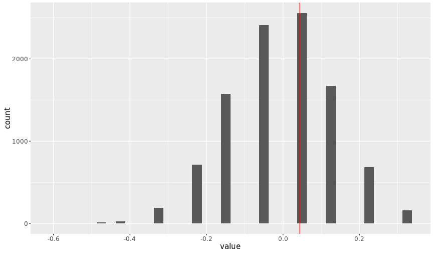

ETC2420/5242
Testing hypotheses using permutation
Earo Wang
&
Nathaniel Tomasetti
Lab 03
Data structures --- data frame
## [1] "pig" "pig" "car"
rpois(n = 10, lambda = 3)
## [1] 0 3 5 5 2 1 4 5 2 1
## [,1] [,2] [,3]
## [1,] 1 4 7
## [2,] 2 5 8
## [3,] 3 6 9
array(1:12, dim = c(2, 2, 3))
## , , 1
##
## [,1] [,2]
## [1,] 1 3
## [2,] 2 4
##
## , , 2
##
## [,1] [,2]
## [1,] 5 7
## [2,] 6 8
##
## , , 3
##
## [,1] [,2]
## [1,] 9 11
## [2,] 10 12
list(x = 10:1, y = list(a = c(TRUE, FALSE, TRUE), b = c("pig", "pig", "car")))
## $x
## [1] 10 9 8 7 6 5 4 3 2 1
##
## $y
## $y$a
## [1] TRUE FALSE TRUE
##
## $y$b
## [1] "pig" "pig" "car"
- Data frame
economics, gapminder and pedestrian datasets that you looked at in the first week are all data frames.
- More on data structures in R, please read one of the chapters in Advanced R.
Create a data frame
library(dplyr)
library(tidyr)
# Create a data frame
yawn_expt <- data_frame(group = c(rep("treatment", 34), rep("control", 16)),
yawn = c(rep("yes", 10), rep("no", 24),
rep("yes", 4), rep("no", 12)))
# Ways to take a look at the data frame
head(yawn_expt) # the first rows to display
tail(yawn_expt) # the last rows to display
glimpse(yawn_expt)
Make a contingency table
| control |
12 |
4 |
16 |
| treatment |
24 |
10 |
34 |
# Make a contigency table
long_yawn <- tally(group_by(yawn_expt, group, yawn))
wide_yawn <- spread(long_yawn, yawn, n)
tbl_yawn <- mutate(wide_yawn, total = sum(no, yes))
tbl_yawn
## Source: local data frame [2 x 4]
## Groups: group [2]
##
## group no yes total
## <chr> <int> <int> <int>
## 1 control 12 4 16
## 2 treatment 24 10 34
- However, the R code above is NOT readable, since it needs reading from right to left.
- "Piping" with
%>% has been introduced to make code more readable.
# Make a contigency table with pipe %>%
yawn_expt %>%
group_by(group, yawn) %>%
tally() %>%
spread(yawn, n) %>%
group_by(group) %>%
mutate(total = sum(no, yes))
## Source: local data frame [2 x 4]
## Groups: group [2]
##
## group no yes total
## <chr> <int> <int> <int>
## 1 control 12 4 16
## 2 treatment 24 10 34
Permutation test
prop_dif <- function(dat) {
permute_yawn <- dat %>%
mutate(yawn = sample(yawn)) # permutate yawn variable
# You're expected to write the rest of the function
}
- Run the function 10000 times
- Set seed to make results reproducible
# give a seed to randomly sample from 1:10
set.seed(1234)
sample(1:10)
## [1] 2 6 5 8 9 4 1 7 10 3
# retrieve the last random sample by using the same seed
set.seed(1234)
sample(1:10)
## [1] 2 6 5 8 9 4 1 7 10 3
set.seed(2016)
diff_prop <- numeric(length = 10000)
for (i in 1:10000) {
# Writing a for-loop is easy peasy for you ;)
}
library(ggplot2)
pdif_df <- as_data_frame(diff_prop) # convert numerics to data frame
ggplot(data = pdif_df, aes(x = value)) +
geom_histogram(binwidth = 0.025)

- Draw a vertical line on the plot that represents the difference for the actual data
